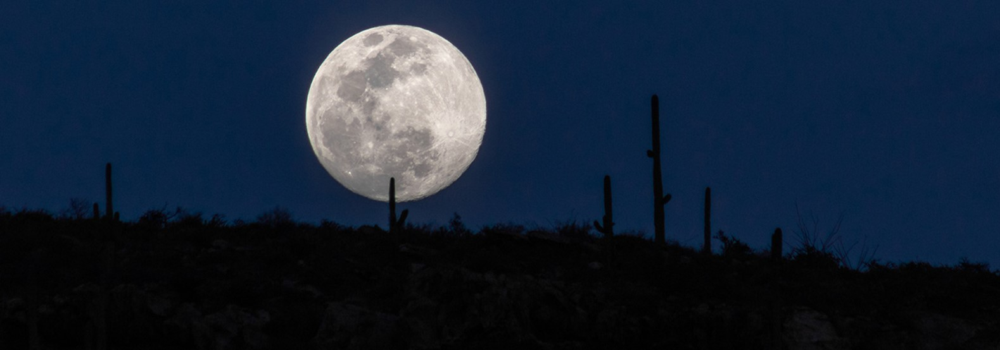

MOON FACTS
At a distance of 384,400 km from the Earth, the Moon is our closest celestial neighbour and only natural satellite. Because of this fact, we have been able to gain more knowledge about it than any other body in the Solar System besides the Earth. Like the Earth itself, the Moon is unique in some ways and rather ordinary in others.
HISTORY OF THE MOON
Millions of people around the world look up at night and marvel at a misty bright glowing round object – the Moon.
Far fewer understand the Moon’s own history, what a Moon day or night is like in comparison with a day or night on Earth, what kind of material the Moon is composed of or how important the Moon is to the Earth itself.
The history of the Moon is rich no matter how it is approached. The Moon has spawned many a myth and legend along with the many facts about it that are known today. Early religions incorporated the Moon’s phases into rites and rituals, and some still do this today.
The Romans named the moon Luna. The Greeks called it Selene and Artemis. after the greek mythical Gods and Goddesses.
Early astronomers keen to uncover the facts behind the Moon’s orbit and different phases contributed much to the modern history of the Moon that humankind is still compiling today. In this article, learn the history of the Moon and uncover a new wonder and appreciation for the Earth’s nearest neighbor.
WHAT IS THE MOON?
At its most fundamental, the Moon is an astronomical body. But that is not all. The Moon is also the Earth’s only permanent satellite.
The Moon is also the brightest object in the Earth’s night sky, second only to the Sun itself.
The Moon measures 2,195 miles (3,475 km) from end to end.
The Moon is called a terrestrial planet, a category it shares with the Earth itself as well as Mars, Venus and Mercury. (In contrast, the more distant planets are called Jovian or giant planets.)
Interestingly, a band of asteroids separates the Moon and its neighboring terrestrial planets from the outer giant planets.
The Moon is about 238,856 miles (384,402 km) away from the Earth. At this distance it takes about three full days for astronauts to travel from the Earth’s surface to land on the Moon.
The exact amount of time it takes to reach the Moon depends on the route taken. The majority of the moon’s surface is covered with regolith, which is a combination of very fine dust and rocky debris. This comes from billions of years of meteor impacts.